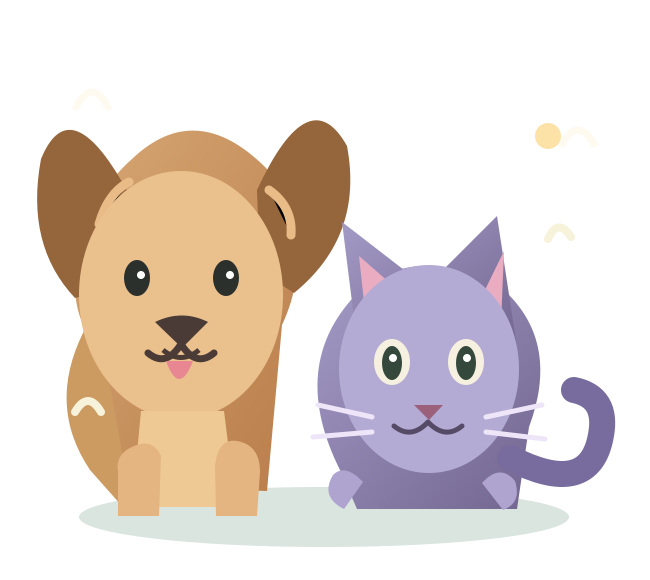

Banho com carinho
Um momento gostoso de limpeza, conforto e atenção aos detalhes.
Um site leve, divertido e cheio de carinho para apresentar os serviços do seu pet shop e aproximar tutores.

Apresente os serviços do seu negócio com a linguagem certa para quem considera os animais parte da família.
Um momento gostoso de limpeza, conforto e atenção aos detalhes.
Opções de acabamento e cuidado adequadas à rotina do pet.
Cuidados complementares que ajudam na rotina de cães e gatos.
Serviços ilustrativos; verifique os efetivamente oferecidos pelo negócio antes de publicar.
Esse espaço foi pensado para contar a história do seu pet shop, apresentar sua equipe e transmitir o acolhimento que os tutores procuram.
Na versão final, o botão direcionará para o WhatsApp do pet shop, onde o tutor poderá combinar o melhor horário.
Este é um exemplo. O estabelecimento real poderá informar quais espécies e portes atende.
O endereço real, mapa e horários serão inseridos durante a personalização.